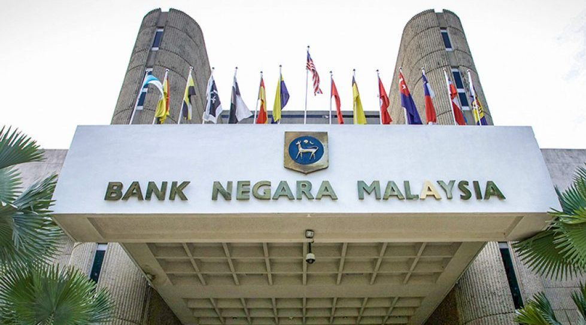

[ Securing Malaysia's Financial Ecosystem ]
My professional ambition is to secure a role within the offensive security division of Bank Negara Malaysia (BNM). Financial institutions form the absolute backbone of national stability, and BNM’s critical infrastructure requires the highest possible tier of proactive defense to preempt catastrophic breaches. Working at BNM offers unparalleled exposure to elite cybersecurity experts, strictly regulated enterprise networks, and state-of-the-art threat intelligence frameworks—perks that provide an environment where I can continuously push the boundaries of my offensive capabilities against highly advanced, persistent threats.
Value Proposition & Strengths: I bring a unique blend of software and hardware integration experience, paired with a rigorously structured mindset. My core strength is an endless curiosity—I am naturally driven to question how every individual component of a system interacts, allowing me to foresee and exploit vulnerabilities that standard automated vulnerability scanners overlook.
Areas for Growth: This intense curiosity, however, can sometimes manifest as a weakness. I am highly methodical and tend to question absolutely everything. While this ensures no vulnerability is missed, it can occasionally slow down rapid brainstorming phases and frustrate peers who prefer a faster, less structured approach. I am actively learning to balance my rigorous organization with team agility, ensuring my thoroughness remains a powerful asset rather than a bottleneck. Ultimately, BNM should hire me because my critical understanding of both hardware and software layers makes me a comprehensive, meticulous, and dedicated asset to their national security posture.